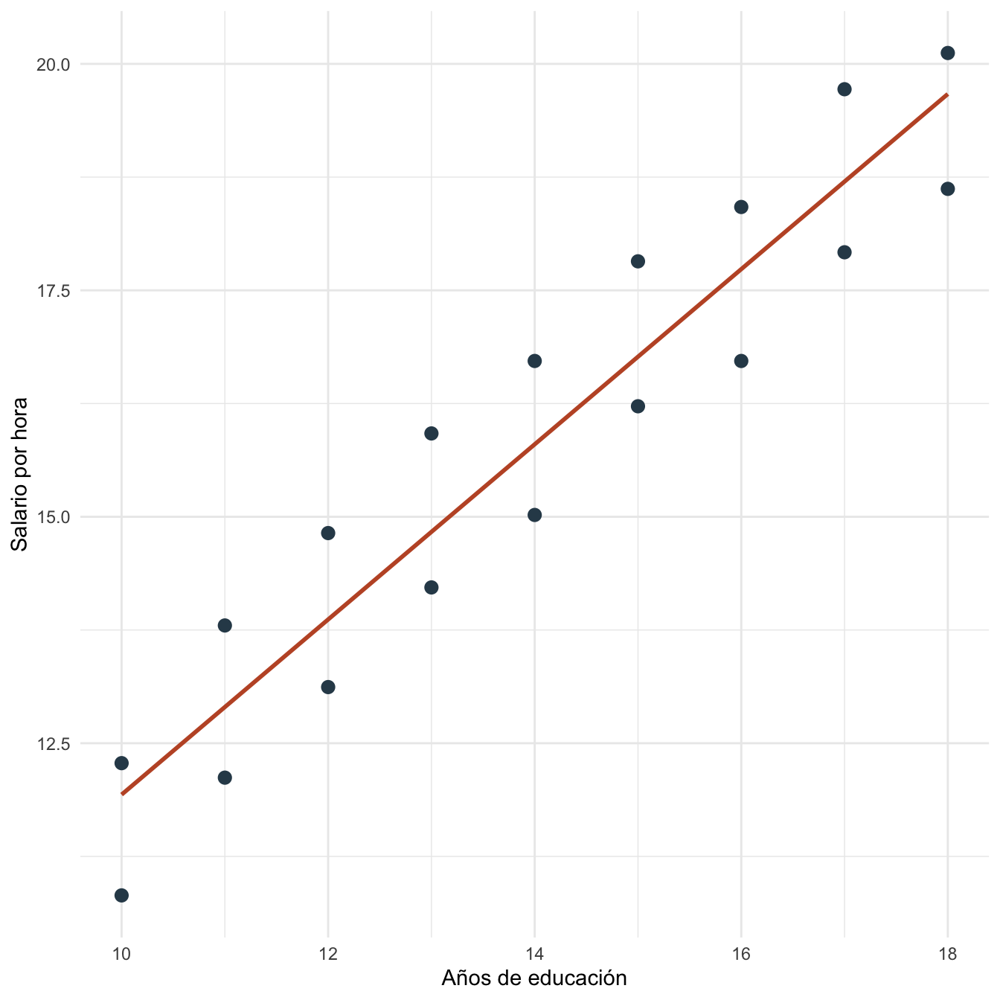
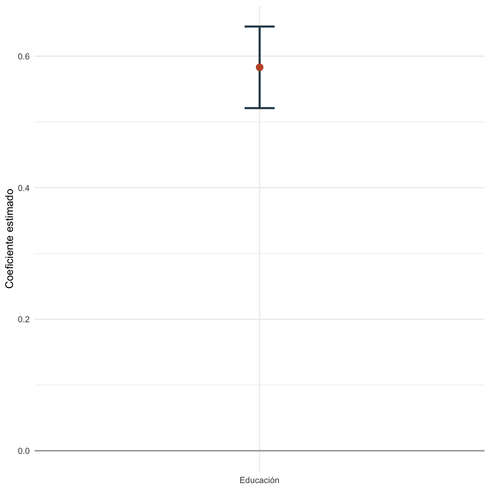

Capítulo 14 Pruebas de hipótesis: práctica
14.1 Objetivos de la práctica
Al finalizar esta práctica podrás:
- Estimar un modelo lineal y extraer estadísticos \(t\), valores \(p\) e intervalos de confianza.
- Evaluar una hipótesis individual sobre un coeficiente.
- Evaluar una hipótesis conjunta con una prueba \(F\).
- Reproducir las mismas pruebas en R, Stata y Python.
14.2 Pregunta aplicada
Queremos estudiar si el salario por hora está asociado con educación y experiencia. La pregunta aplicada es:
¿La evidencia muestral permite rechazar que educación y experiencia no estén asociadas con el salario por hora?
Estimaremos:
\[ \text{salario\_hora}_i =\beta_0+\beta_1\text{educacion}_i+\beta_2\text{experiencia}_i+\epsilon_i. \]
Evaluaremos una prueba individual para educación y una prueba conjunta para educación y experiencia.
14.3 Datos
Usaremos una base determinística para que los resultados sean reproducibles en los tres programas.
| educacion | experiencia | ajuste | salario_hora |
|---|---|---|---|
| 10 | 1 | -0.7 | 10.82 |
| 10 | 4 | 0.1 | 12.28 |
| 11 | 2 | -0.3 | 12.12 |
| 11 | 6 | 0.5 | 13.80 |
| 12 | 3 | -0.2 | 13.12 |
| 12 | 8 | 0.4 | 14.82 |
| 13 | 4 | 0.0 | 14.22 |
| 13 | 9 | 0.6 | 15.92 |
| 14 | 5 | -0.1 | 15.02 |
| 14 | 10 | 0.5 | 16.72 |
| 15 | 6 | 0.2 | 16.22 |
| 15 | 11 | 0.7 | 17.82 |
| 16 | 7 | -0.2 | 16.72 |
| 16 | 12 | 0.4 | 18.42 |
| 17 | 8 | 0.1 | 17.92 |
| 17 | 13 | 0.8 | 19.72 |
| 18 | 9 | -0.1 | 18.62 |
| 18 | 14 | 0.3 | 20.12 |

Figura 14.1: Relación entre educación y salario por hora en la práctica de pruebas
14.4 Estimación en R
Estimamos el modelo no restringido y extraemos los objetos necesarios para las pruebas.
| termino | estimacion | error_estandar | t | p_valor |
|---|---|---|---|---|
| (Intercept) | 5.0593 | 0.3120 | 16.2178 | 0 |
| educacion | 0.5830 | 0.0291 | 20.0398 | 0 |
| experiencia | 0.3516 | 0.0204 | 17.2305 | 0 |

Figura 14.2: Intervalo de confianza para el coeficiente de educación
La prueba conjunta se calcula comparando el modelo restringido con el no restringido:
| prueba | SRC_restringida | SRC_no_restringida | F | p_valor |
|---|---|---|---|---|
| H0: educación = 0 y experiencia = 0 | 125.2848 | 0.6306 | 1482.458 | 0 |
14.5 Interpretación
La pendiente de educación es 0.583, con estadístico \(t\) igual a 20.040 y valor \(p\) igual a 0.0000. El intervalo de confianza va de 0.521 a 0.645.
La prueba conjunta de \(H_0:\beta_{\text{educacion}}=\beta_{\text{experiencia}}=0\) entrega un estadístico \(F\) igual a 1482.458 y un valor \(p\) igual a 0.0000.
Rechazar una hipótesis de coeficiente cero no convierte automáticamente la asociación en causal. La interpretación causal depende de la exogeneidad y del diseño empírico.
14.6 Estimación en Stata
El mismo ejercicio puede correrse en Stata:
clear
input educacion experiencia ajuste
10 1 -0.7
10 4 0.1
11 2 -0.3
11 6 0.5
12 3 -0.2
12 8 0.4
13 4 0.0
13 9 0.6
14 5 -0.1
14 10 0.5
15 6 0.2
15 11 0.7
16 7 -0.2
16 12 0.4
17 8 0.1
17 13 0.8
18 9 -0.1
18 14 0.3
end
gen salario_hora = 4.5 + 0.68 * educacion + 0.22 * experiencia + ajuste
reg salario_hora educacion experiencia
test educacion
test educacion experienciaLos resultados esperados son los mismos coeficientes que Stata debe reproducir si usa la misma base y especificación:
| Término | Estimación aproximada | Error estándar aproximado |
|---|---|---|
| Constante | 5.059 | 0.312 |
| Educación | 0.583 | 0.029 |
| Experiencia | 0.352 | 0.020 |
| \(R^2\) | 0.995 |
14.7 Estimación en Python y Google Colab
Para correr esta práctica en Google Colab, abre un cuaderno nuevo y ejecuta:
Luego reproduce el modelo y las pruebas:
import pandas as pd
import statsmodels.api as sm
datos_hip = pd.DataFrame({
"educacion": [10, 10, 11, 11, 12, 12, 13, 13, 14, 14,
15, 15, 16, 16, 17, 17, 18, 18],
"experiencia": [1, 4, 2, 6, 3, 8, 4, 9, 5, 10,
6, 11, 7, 12, 8, 13, 9, 14],
"ajuste": [-0.7, 0.1, -0.3, 0.5, -0.2, 0.4, 0.0, 0.6, -0.1, 0.5,
0.2, 0.7, -0.2, 0.4, 0.1, 0.8, -0.1, 0.3]
})
datos_hip["salario_hora"] = (
4.5 + 0.68 * datos_hip["educacion"] +
0.22 * datos_hip["experiencia"] +
datos_hip["ajuste"]
)
X = sm.add_constant(datos_hip[["educacion", "experiencia"]])
y = datos_hip["salario_hora"]
modelo = sm.OLS(y, X).fit()
print(modelo.summary())
print(modelo.t_test("educacion = 0"))
print(modelo.f_test("educacion = 0, experiencia = 0"))Los resultados esperados son los mismos coeficientes que Python debe reproducir si usa la misma base y especificación:
| Término | Estimación aproximada | Error estándar aproximado |
|---|---|---|
| Constante | 5.059 | 0.312 |
| Educación | 0.583 | 0.029 |
| Experiencia | 0.352 | 0.020 |
| \(R^2\) | 0.995 |
14.8 Comparación R, Stata y Python
R, Stata y Python entregan los mismos coeficientes y las mismas pruebas si usan la misma base, la misma especificación y la misma hipótesis nula. Las diferencias están en la sintaxis: test en Stata, anova() o contrastes en R, y t_test()/f_test() en Python.
| Tarea | R | Stata | Python |
|---|---|---|---|
| Modelo MCO | lm() |
reg |
sm.OLS() |
| Prueba individual | coef(summary()) |
test educacion |
t_test() |
| Prueba conjunta | anova(restringido, no_restringido) |
test educacion experiencia |
f_test() |
| Intervalo de confianza | confint() |
estat/salida de reg |
conf_int() |
14.9 Errores frecuentes en la práctica
- Probar el estimador en vez del parámetro. La hipótesis se formula sobre \(\beta\), no sobre \(\hat{\beta}\).
- Cambiar de muestra entre modelos. La prueba \(F\) con modelos restringidos y no restringidos requiere la misma muestra.
- Reportar solo significancia. También interpreta magnitudes, unidades y relevancia económica.
- Confundir prueba individual y conjunta. Dos coeficientes pueden no ser significativos individualmente y sí serlo conjuntamente, o al revés.
14.10 Ejercicios computacionales
- Evalúa \(H_0:\beta_{\text{educacion}}=0.5\) en R, Stata y Python.
- Calcula manualmente el estadístico \(t\) de educación usando el coeficiente y su error estándar.
- Estima un modelo restringido sin experiencia y compara su SRC con la del modelo completo.
- Cambia el nivel de significancia de 5% a 10%. ¿Cambia alguna decisión?
- Verifica en Python que la prueba \(F\) de una sola restricción coincide con el cuadrado del estadístico \(t\).